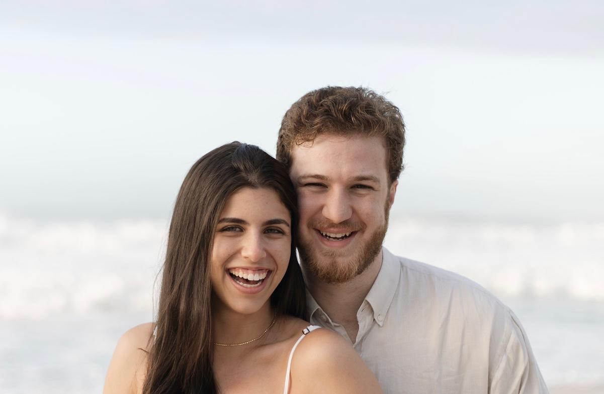

Como Tudo Começou
Nenhum de nós dois sabe quando nos conhecemos. Provavelmente foi por volta de 2010, quando Enrico começou a frequentar a igreja que Bia já frequentava.
Crescemos, saímos da infância e entramos na adolescência. Foi nessa fase que, entre disputas e reconciliações, liderávamos juntos o grupo de adolescentes da igreja.
Mas, em um retiro em 2019, tudo mudou. No meio de uma acirrada partida de truco, foi lançada uma aposta diferente: "Enrico, se você perder, vai chamar a Bia para sair na frente de todo mundo".
E não deu outra: partida perdida. O corajoso Enrico, então com 14 anos, foi lá e fez. A resposta superou as expectativas: "ok, uma vez".
Como talvez seja possível perceber, não foi só uma vez. Saímos outras vezes, sempre com o apoio fundamental de grandes amigos.
Em pouco tempo, já não havia mais nada a esconder (e na verdade, nem queríamos). Todo mundo já sabia. Começamos a namorar um mês depois do nosso primeiro encontro.
Desde então, já se passaram mais de 7 anos. Vivemos, crescemos, amadurecemos e chegamos até aqui, cheios de histórias para contar. E, com a certeza de que a melhor delas ainda nem começou!
